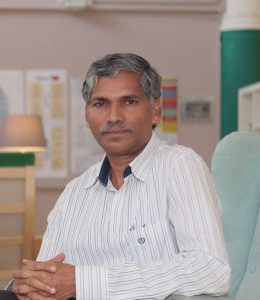
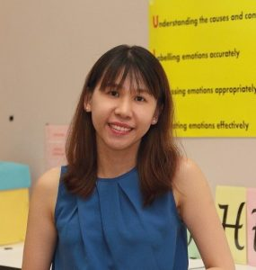
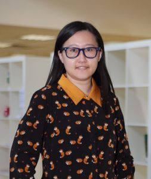
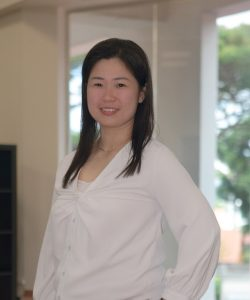

51st e-College Day
A Message from Our Guest of Honour
| Professor Tan Huay Cheem | |
| Professor Tan Huay Cheem graduated from the National University of Singapore in 1987 and obtained his Master of Medicine in Internal Medicine and Membership of Royal College of Physician (United Kingdom) in 1992, Fellowship of American College of Cardiology in 2001, Fellowship of Society of Coronary Angiography and Intervention in 2002 and Fellowship of Royal College of Physician in 2004.
Professor Tan did his Interventional Cardiology fellowship at Duke University Medical Centre, North Carolina, USA in 1995, followed by training in Vascular Ultrasonography at St Vincent’s Hospital, Sydney, Australia (2002), and Carotid Stenting at Taiwan National University Hospital (2008). He is presently the Director & Senior Consultant Cardiologist at National University Heart Centre, Singapore (NUHCS), National University Health System (NUHS); and Professor of Medicine with Yong Loo Lin School of Medicine, National University of Singapore (NUS). Professor Tan is also the current President of the Singapore Heart Foundation (SHF), immediate Past President of the Asia Pacific Society of Interventional Cardiology (APSIC) and founding member of the Asian Interventional Cardiovascular Therapeutics (AICT) international interventional cardiology meeting. He is also the past President of Singapore Cardiac Society (2003-2005). Professor Tan was awarded the National Day Award for Public Service Administration in 2016; Ministry of Health, Singapore Distinguished Senior Clinician Award 2017, and National Medical Excellence Award 2011. He is regularly invited as a lecturer and faculty in many international cardiology meetings, and is a Visiting Professor to 11 University-affiliated hospitals in China, and the University of Mandalay in Myanmar. He is an active clinical researcher and Chief Editor of AsiaIntervention journal, as well as a regular medical columnist for LianHe ZaoBao, Singapore’s largest Chinese newspaper. |
| “College experience is going to be a very unique one, and you should cherish it.” |
| “People will forget what you say … and what you do, but they will never forget how you make them feel.” |
| “You are living in an extraordinary time.” |
|
“Be grateful” “Be passionate” “Be determined”
|
An Expression of Our Gratitude
| Associate Professor Ho Hwee Long | |
|
Our heartfelt gratitude to Associate Professor Ho Hwee Long, for his unwavering passion, enthusiasm and determination in deeply inspiring many batches of our NJC Symphonic Band members for the past 51 years. Associate Professor Ho Hwee Long has led the evolution of the wind band in Singapore since 1969. He was formerly with the Nanyang Technological University’s National Institute of Education, and a Cultural Medallion Winner in Singapore.
|
| Play the video to view Associate Professor Ho’s journey with the NJC Symphonic Band through the years. |
A Journey in Education and Service
We would like to take this opportunity to sincerely congratulate our teachers, who have dedicated 25, 15 and 10 years to the education service respectively.
Click on the name of the teacher awardee to read his/her heartfelt thoughts.
| Long Service Award: 25 Years | |
|
 |
“As a teacher, I hope that ultimately my students are able to persevere throughout any trials in life and are able to find something that stirs their passion and gives them happiness. I hope that they will not be afraid of mistakes but rather have the courage to try once more. I want them to be able to not only take away subject knowledge but also values and morals from their journey in NJC.” |
| Long Service Award: 15 Years | |
| “Respect the knowledge and where it comes from; from authentic sources, my teachers and even if it comes from my own students … that’s where I believe true wisdom is attained. Appreciate it and it will naturally be retained and glow in us.” | |

|
“I just want my students to achieve ABC in life – A for Accolade, B for Betterment, C for Compassion. Always strive to be your best, better than yesterday, and be good to all beings in this world.” |

|
“I want students to enjoy learning and take pride in their work. I want students to be a positive force and recognise that everyone of us has different strengths to contribute to the place we live in.” |
| “I would like students to be able to see relevance in what they have learnt and apply it to their careers or everyday life. They need not necessarily become doctors or scientists, but at the end of the day I hope that they are competent and able to analyse issues and think critically, such that their opinions about certain issues related to Science emerge.” | |
| “To my students I’d like to say, always do your best, because you deserve nothing better than the best.” | |
| “As an educator, I would like my students to find meaning in what they do and discover their passion in life. I would also want them to develop empathy and learn to uplift others as they grow up to become good citizens and leaders with sound values. I believe that these traits are important to guide them through the volatile, uncertain, complex and ambiguous world in this 21st century.” | |
| “The world is no longer what it is and you will be living and leading in a world, rich in uncertainty where the old ways of doing things no longer work. You have to really stop just thinking about yourselves but about each other. There is a difference between pleasure (playing video games, handphone usage etc) and joy (finding pursuits where you add value to others’ lives). Over time, I hope that you will reduce activities that give you pleasure.“ | |

|
“The most satisfying moment for any teacher is when his student, after years, remembers him and quotes a few small incidents that touched the student’s life. What looks small to me would have made all the difference in the student’s life and the feeling is just awesome. No amount of money can give you the satisfaction that I get watching my students grow.” |
| “I am motivated when I see the smiles that appear on the students’ face or the “Eureka” moment in their eyes when they have grasped a difficult concept or topic. Everyone learns differently and one of the high points in the teaching journey is to have the opportunity to be creative, think of various activities to make learning fun and scientific concepts easy to understand such that students can learn effectively. There is nothing more rewarding than knowing that you can make an impact on students’ life with the chance to better each student, both academically and also as a person.” | |
 Mr Ng Joon Hong
Mr Ng Joon Hong{kind=link}
{kind=link}
{kind=link}
{kind=link}
{kind=link}
{kind=link}
{kind=link}
| Long Service Award: 10 Years | |

|
“每年我都会问学生“为什么你们要学华文？”这个问题，很多学生的回答是“因为我是华人，我要了解自己的文化，否则别人会看不起我的。“这些回答让我感动，同时也让我明白，作为华文老师除了让学生学华文，更应该让他们明白这个语言的优美、丰富，让他们有机会掌握丰富的文化，让他们的未来因为我懂华文而自豪和骄傲.“ |

|
“Every student has different goals and aims in life. As a teacher, there is no one fixed common goal that I want all of them to achieve, other than that they grow up to become people with the right character values, who will use what they have learnt to help improve society and those who can benefit from their contributions.” |
| “As they grow up and mature, I hope that all students will find a sense of purpose in what they choose to do because that will ground them and give them something to work hard for. As much as having dreams is important, they should also commit to putting in the hard work necessary for producing the results that they want to achieve. Above all, they should commit to being good people who care for others and help to build each other up.” | |
| “What I want most for my students is that they learn to appreciate, especially to appreciate what they have.” | |
|  | “As an academic teacher, I hope for students to excel academically. However, it is more important for them to be developed into concerned citizens, where they make decisions by considering not only themselves but also others; are unafraid to stand up for what is right; contribute to the community and shape the future of our nation.” |
| “I would like my students to enjoy the different aspects of physics that they have encountered, within and outside class. Sure, it’s Physics. They may feel frustrated and challenged sometimes, but that’s all good. Why? Because they are learning.” | |
|  | “As individuals, each student will have his or her own goal and aspiration. I hope that as they fulfill their dreams in life, they will also be able to think critically, be socially aware, and be able to find their sense of purpose in life and society.” |
| “My hope for my students is that they take courage to make mistakes but learn from them to stand up and try again. One day when they look back, they would see how that tenacity has built their character and optimism for life.” | |

|
“更能触动心弦的是一考完试后，学生就立刻发过来的短讯—其中的内容，表达了对老师的感激，甚至觉得自己表现不理想，达不到老师的要求，对不起老师，深感内疚。学生毕业回校探望老师，来到面前告诉你：“老师，我喜欢你的华文课！谢谢你教我华文。”这话会让我睡得很香很甜! 能教出懂得感恩的学生还有什么遗憾呢?” |
|  | “I remain hopeful that my students have the ability to attain their personal goals, lead a life that they desire in the future, and demonstrate the College’s Values in whatever they choose to undertake. Be daring to make a difference!” |
{kind=link}
{kind=link}
{kind=link}
{kind=link}
{kind=link}
{kind=link}
{kind=link}
{kind=link}
{kind=link}
We also want to express our gratitude to our Technical Support and Operations Support Officers, and our Allied Educator, for dedicating 10 years of valuable service to NJC.
| Long Service Award: 10 Years | |

Mdm Aung Geok Mui |
Our Technical Support Officer |

Mdm Alice George |
Our Operations Support Officer |

Ms Nur Amirah Bte Khairudin |
Our Technical Support Officer |
|
Mr Phua William |
Our Allied Educator |
A Celebration of Excellence
| The NJC Student of the Year Award: Chang Shi En | |
|
The National Junior College Student of the Year is the pinnacle of all student awards, recognising all-round excellence in academia, CCA, leadership and service. |
|
| “A high achiever who maintains her humility, Shi En is the befitting representation of National Junior College’s desired student outcomes, truly embodying the college motto Service with Honour.” | |
| The Lim Kim Woon Award: Or Shao Ning, Shannon | |
|
The Lim Kim Woon Award, initiated and structured by a former NJCian in honour of our first Principal, recognises students who exemplify the hallmark characteristics and traits of our motto, Service with Honour. |
|
| “Shannon aspires to contribute to the future of Singapore, and she has received the PSC scholarship to study Civil Engineering. As a champion of social causes, she hopes to continue pursuing her interest to balance both the economic growth and environmental consciousness of Singapore.” | |
| The NJC@69ers Award: Gary Tsan Yan Kai | |
|
The NJC@69ers award, initiated and structured by the first cohort of NJCians, recognises excellence in the arts and humanities, both in core-curricula and co-curricular endeavours. |
|
| “In spite of his achievements, Gary remained humble and sincere, and was well-liked by his peers. He showed great tenacity in his time at NJC, involving himself in much and caring for others, and is truly an all-rounded student, whose achievements go beyond the classroom.” | |
| Play the video to hear from Shi En, Shannon and Gary. |
| The Stephen Loh Sports Excellence Award: Gan Jie Hui | |
|
The Stephen Loh Sports Excellence Award is the pinnacle sports award, recognising sportsmanship and sporting excellence in Track & Field, Squash and Canoeing. |
|
| “A servant leader who inspires others, she was fondly given the nickname “Gan-dhi” by her peers.” | |
| The Stephen Loh Sports Excellence Award: Kho Rui-En | |
|
The Stephen Loh Sports Excellence Award is the pinnacle sports award, recognising sportsmanship and sporting excellence in Track & Field, Squash and Canoeing. |
|
| “Rui-en’s larger than life personality is a poetic contrast to her small stature. In a sport where size and physique matters, she is one of the fastest paddlers and one of the strongest minds in her team.” | |
| The SAC Sports Excellence Award: Rachel Tan Wei Xuan | |
|
The SAC Sports Excellence Award is the pinnacle sports award, recognising sportsmanship and sporting excellence. |
|
| “Though having improved and come a long way from where she started, Rachel still remains humble and continues to improve in the sport that she loves so much.” | |
| The SAC Sports Excellence Award: Agnes Lee Yin Faye | |
|
The SAC Sports Excellence Award is the pinnacle sports award, recognising sportsmanship and sporting excellence. |
|
|
“Agnes has realised that the value of her CCA goes beyond just the sport. She is determined to continue to lead her team with exuberance in her final year, as a vice-president, teammate, senior, and role model.” |
|
| Play the video to hear from Jie Hui, Rui-En, Rachel and Agnes. |
| The SAC Arts Excellence Award: Crystal Chan Xin Er | |
|
The SAC Arts Excellence Award recognises academic excellence in the arts. |
|
| “Crystal is the epitome of an outstanding Arts student – analytical, perceptive, and every inch a critical thinker.” | |
| The SAC Arts Excellence Award: Adam B. Mohamed Razali | |
|
The SAC Arts Excellence Award recognises academic excellence in the arts. |
|
| “Adam is a fine example of a remarkable arts student: inquisitive, able to engage with complex ideas, and self-motivated.” | |
| The SAC Science Excellence Award: Tan Yee Lin | |
|
The SAC Science Excellence Award recognises excellence in the sciences, both in core curricula and in co-curricular scientific endeavours. |
|
| “Yee Lin’s intellectual inquisitiveness in the sciences and eagerness to explore challenging topics outside the syllabus is reflected through her long-standing commitment to scientific research.” | |
| The Junior High All-Round Excellence Award: Andrea Siby | |
|
The Junior High All-Round Excellence Award is the pinnacle of all Junior High student awards, recognising all-round excellence in academia, CCA, leadership and service. |
|
| “Andrea is an outstanding academic performer and widely- recognised inspiration both in and out of the classroom.” | |
| Play the video to hear from Crystal, Adam, Yee Lin and Andrea. |
| The PAACT Aesthetics Excellence Award: Teryl Zhao Tongxin | |
|
The PAACT Aesthetics Excellence Award recognises excellence in the aesthetics. |
|
| “As Concertmaster, Teryl makes decisions about repertoire and musician roster, and has had a direct impact on the direction of the Orchestra’s annual concert at the Esplanade Recital Studio as well as the members’ involvement in performances.” | |
| The PAACT Aesthetics Excellence Award: Hanson Ong King Hui | |
|
The PAACT Aesthetics Excellence Award recognises excellence in the aesthetics. |
|
| “Hanson has made immense contributions to the development of Chinese orchestral music in the College.” |
|
| Play the video to hear from Teryl and Hanson. |
A Celebration of the Human Spirit
| CCA Awards | |
|
The NJC CCA Awards recognise students who have achieved success in their respective CCAs, and have contributed in leading their CCAs to greater heights. |
|
| For Clubs and Societies |
|
| For Leadership |
|
| For the Performing Arts | |
| For Sports and Games | |